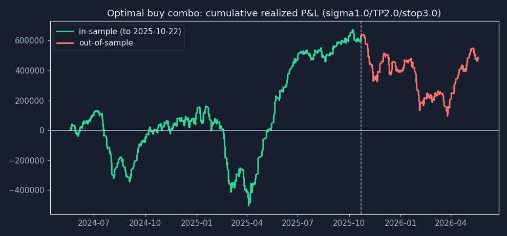
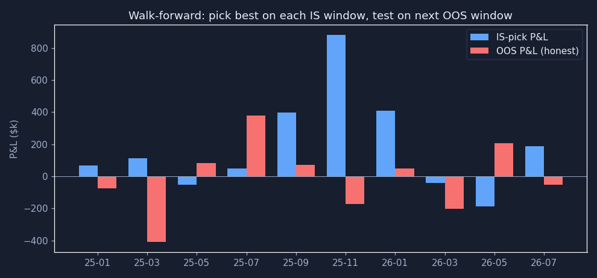
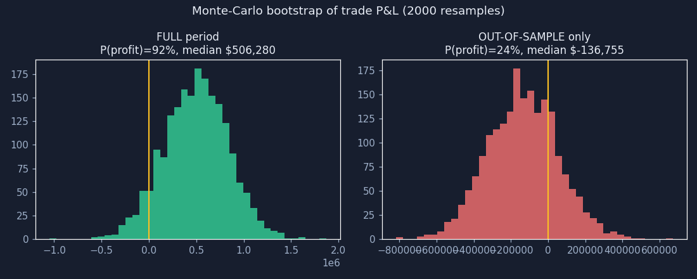
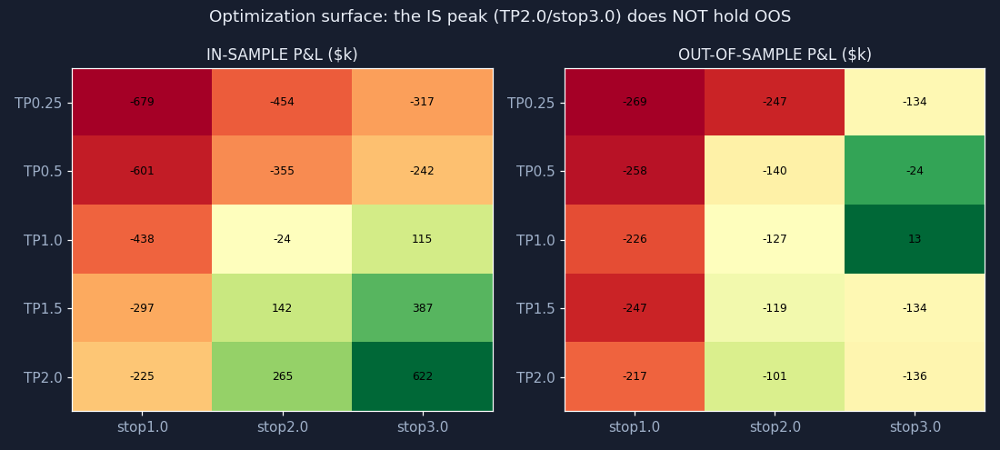

How the out-of-sample, walk-forward, and Monte-Carlo tests are actually computed — the math, the code, the process, and the graphs. Worked on the optimized buy combo. 2026-05-25
The buy-side optimizer's winner: σ-entry 1.0 · TP 2.0σ · stop 3.0σ, run on 10 names × 2 years of 5-minute bars (2024-05-20 → 2026-05-20, 459 trading days, $100k/trade). Full-window it makes +$485,934 across 2,253 trades. The question this report answers: is that real, or fit to the past?
The single most important safeguard: each parameter combo is simulated ONCE over the full history, and every trade is tagged with its entry date. The OOS / walk-forward / Monte-Carlo steps then just select subsets of those already-computed trades by date — they never re-run the engine. That makes look-ahead structurally impossible: a trade's outcome is fixed before any window is drawn.
TradeRec(sym, entry_date, pnl, win, still_open) — windows are pure filters on entry_date. Open trades are excluded from every total.The idea: optimize on the first 70% of the timeline, then test the chosen parameters exactly once on the untouched final 30%. If the edge is real it persists; if it was fit to noise, it dies.
Sort the unique dates. Split at index ⌊0.70 × N⌋ → split date 2025-10-22. Pick the combo with the highest realized P&L over [start, split]. Apply that one combo to (split, end] and record its P&L. No re-optimization on the test set.
backtest/validation.py)def oos_evaluate(grid, frac=0.7): dates = date_axis(grid) split = dates[int(len(dates) * frac)] is_best, _ = best_combo(grid, start=dates[0], end=split) # optimize on IS only key = (is_best.limit_mult, is_best.stop_mult) oos = window_stats(*key, grid[key], start=_next(split), end=dates[-1]) # test ONCE, held-out return {"split_date": split, "is": is_best, "oos": oos}
| Window | Chosen combo | P&L |
|---|---|---|
| In-sample (to 2025-10-22) | TP 2.0σ / stop 3.0σ | +$622,259 |
| Out-of-sample (held-out) | same combo | −$136,326 |

The green in-sample equity climbs steadily; the moment the held-out period begins (dashed line), the red curve rolls over. The combo that printed +$622k on the data it was chosen from lost $136k on the data it had never seen.
The idea: one split could be lucky. Walk-forward repeats the IS→OOS test in a rolling fashion across the whole timeline, re-picking the best combo on each 180-day in-sample window and trading it on the next 60 days it hasn't seen, stepping forward 60 days at a time. Stitching the OOS pieces together is the honest track record — what you'd actually have earned re-tuning as you go.
def walk_forward(grid, is_days=180, oos_days=60, step_days=60): cur = start while is_end < end: best, _ = best_combo(grid, start=cur, end=is_end) # pick on IS window oos = window_stats(*best.key, grid, start=is_end+1, end=oos_end) # trade next OOS window oos_pnls += closed_pnls(grid[best.key], is_end+1, oos_end) # collect the honest record cur += step_days
Stitched out-of-sample P&L across all folds: −$125,493. The blue bars (what each fold looked like in-sample) are positive; the red bars (what it actually did on the next, unseen window) are mostly negative.

The idea: the single P&L number could hinge on a handful of lucky trades. Bootstrapping asks: if you reshuffled the same trades (resampling with replacement), how often would you still profit? It turns one P&L into a distribution and a probability of profit.
Given the list of trade P&Ls (length k): draw k of them with replacement, sum to one simulated total; repeat 2,000 times (fixed seed 42 for reproducibility). P(profit) = fraction of the 2,000 totals that are > 0.
def monte_carlo(pnls, n=2000, seed=42): rng = random.Random(seed); k = len(pnls) for _ in range(n): sample = [pnls[rng.randrange(k)] for _ in range(k)] # resample WITH replacement totals.append(sum(sample)) prob_profit = sum(1 for t in totals if t > 0) / n
| Trade set | P(profit) | median total | 5th-pctile |
|---|---|---|---|
| Full period (incl. the bull run) | 92% | +$505,937 | −$64,458 |
| Out-of-sample only | 24% | −$137,174 | — |

Left (green) = the full period: 92% of reshuffles profit — but that includes the two-year rally. Right (red) = out-of-sample only: just 24% of reshuffles profit, median −$137k. The yellow line is break-even. The forward distribution sits mostly on the losing side.
The clearest picture of overfitting: the heatmap of P&L across the TP × stop grid, in-sample vs out-of-sample. In-sample there's a clean bright peak at TP2.0/stop3.0 — the combo the optimizer chose. Out-of-sample that same cell is red, and the whole surface rearranges. The "peak" was a feature of the past, not the future.

All three validators live in backtest/validation.py and operate on the date-tagged grid from backtest/optimizer.run_grid. The numbers and every figure above were produced from the cached IBKR data in this repo (no network needed):
# build the grid (each combo simulated once, trades date-tagged) grid = run_grid(symbols_data, "buy", TP_grid, stop_grid, sigma_mult=1.0, order_size=100000, max_rr=999) oos_evaluate(grid) # -> IS +$622,259 -> OOS -$136,326 walk_forward(grid) # -> stitched OOS -$125,493 monte_carlo(closed_pnls(grid[(2.0,3.0)])) # -> P(profit) 92% full / 24% OOS
backtest/validation.py, backtest/optimizer.py. Data: IBKR daily + 5-min, 10 names, 2024-05-20→2026-05-20. Figures generated with matplotlib from the same run. Companion to reports/dashboard.html.